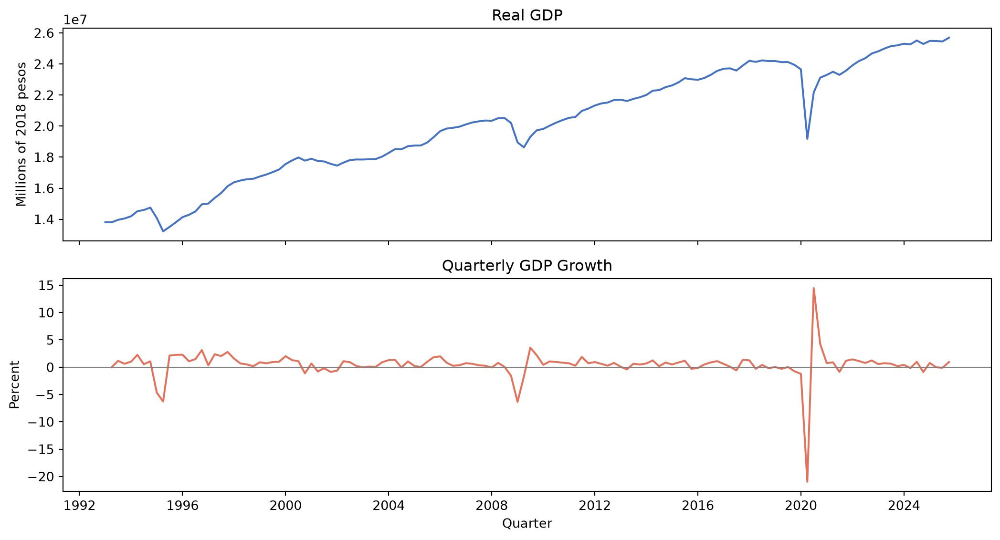

Observations
131
GDP Growth Period
1993Q2–2025Q4
Forecast Variables
1

| Series | ADF statistic | p-value | Lags | Conclusion |
|---|---|---|---|---|
| Log Real GDP | -3.299 | 0.0665 | 0 | Do not reject unit root |
| GDP Growth (%) | -9.616 | 0 | 1 | Stationary |
| Model | Dynamic coefficients (estimate; p-value) | AIC | BIC | LB p, lag 8 | LB p, lag 12 |
|---|---|---|---|---|---|
| ARIMA(3,0,1) | AR1: −0.439 (<.001) AR2: 0.137 (.056) AR3: −0.185 (.221) MA1: 1.000 (.960) |
347.112 | 362.920 | .489 | .636 |
| ARIMA(0,0,1) | MA1: 0.508 (<.001) | 347.836 | 355.740 | .474 | .647 |
| Model | Horizon | Observations | RMSE | MAE |
|---|---|---|---|---|
| ARIMA (0,0,1) | 1 | 28 | 6.327 | 2.410 |
| Historical Mean | 1 | 28 | 4.963 | 1.960 |
| Random Walk | 1 | 28 | 7.977 | 3.038 |
| AR (1) | 1 | 28 | 6.439 | 2.451 |
| ARIMA (0,0,1) | 4 | 25 | 5.227 | 2.122 |
| Historical Mean | 4 | 25 | 5.228 | 2.118 |
| Random Walk | 4 | 25 | 7.481 | 3.801 |
| AR (1) | 4 | 25 | 5.250 | 2.199 |
| Model | Horizon | Observations | RMSE | MAE |
|---|---|---|---|---|
| ARIMA (0,0,1) | 1 | 24 | 0.699 | 0.580 |
| Historical Mean | 1 | 24 | 0.763 | 0.633 |
| Random Walk | 1 | 24 | 0.891 | 0.674 |
| AR (1) | 1 | 24 | 0.684 | 0.570 |
| ARIMA (0,0,1) | 4 | 21 | 0.788 | 0.649 |
| Historical Mean | 4 | 21 | 0.786 | 0.645 |
| Random Walk | 4 | 21 | 5.917 | 2.523 |
| AR (1) | 4 | 21 | 0.952 | 0.739 |
| Comparison | Horizon | Observations | DM-HLN Statistic | p-value | Conclusion |
|---|---|---|---|---|---|
| ARIMA vs. Historical Mean | 1 | 28 | 1.014 | 0.320 | Fail to reject H₀ |
| ARIMA vs. Historical Mean | 4 | 25 | -0.236 | 0.815 | Fail to reject H₀ |
| ARIMA vs. Random Walk | 1 | 28 | -1.058 | 0.299 | Fail to reject H₀ |
| ARIMA vs. Random Walk | 4 | 25 | -1.010 | 0.322 | Fail to reject H₀ |
| ARIMA vs. AR(1) | 1 | 28 | -1.057 | 0.300 | Fail to reject H₀ |
| ARIMA vs. AR(1) | 4 | 25 | -0.912 | 0.371 | Fail to reject H₀ |
| Comparison | Horizon | Observations | DM-HLN Statistic | p-value | Conclusion |
|---|---|---|---|---|---|
| ARIMA vs. Historical Mean | 1 | 24 | -1.219 | 0.235 | Fail to reject H₀ |
| ARIMA vs. Historical Mean | 4 | 21 | 0.751 | 0.461 | Fail to reject H₀ |
| ARIMA vs. Random Walk | 1 | 24 | -1.108 | 0.279 | Fail to reject H₀ |
| ARIMA vs. Random Walk | 4 | 21 | -1.008 | 0.326 | Fail to reject H₀ |
| ARIMA vs. AR(1) | 1 | 24 | 1.354 | 0.189 | Fail to reject H₀ |
| ARIMA vs. AR(1) | 4 | 21 | -0.940 | 0.358 | Fail to reject H₀ |